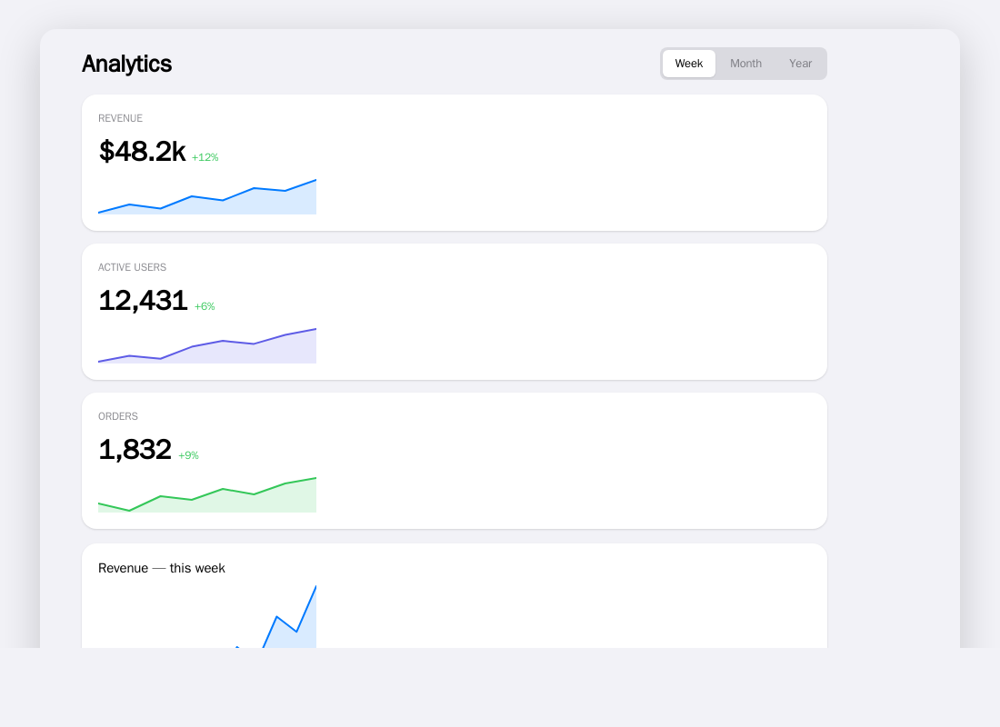

QORM Web Platform
The web platform connects to QORM through the WASM Runtime or the TypeScript Adapter.
Package it
qorm package examples/dashboard -p web -o dashboard-web # an installable, offline PWAServe the output folder and "Add to Home Screen". Any example packages to web. See the support matrix.

qorm package -p web produces an installable PWA — here the dashboard example opened in a browser.
http.* steps run in the background here
The packaged app carries the QORM runtime as WASM, and js/wasm is single-threaded: the goroutine running your action is the same one servicing the browser's event loop. A blocking request there does not slow the app down, it deadlocks it. So this host — like the standalone WASM runtime and the live playground, which are the same binary — runs every http.* step on a background worker, whether or not its JSON opted in with "async": true.
That is a user-visible semantic, not an implementation detail:
The steps that follow anhttp.*step run while the request is still open. Any step that depends on the reply belongs inonSuccess/onError.
An action written that way behaves identically under qorm run and in the package. An action that reads a response from a sibling step works on the dev server (where requests block unless you opt in) and silently reads a stale value once packaged — writing "async": true explicitly reproduces the packaged behaviour while you develop. See First action for the full pattern.
The push channel that carries the answer back is the same one intermediate frames use: the page installs window.qormApplyFrame, so a render step's loading frame reaches the screen and the request's completion arrives later as its own frame. Every path that swaps the runtime — an applied OTA update, a rollback — re-installs it, and a reply that belongs to a runtime that has since been replaced is dropped rather than written into its successor.
Architecture
qorm.bundle.json
↓
QORM WASM Runtime / Web Runtime
↓
Web Host Adapter
↓
Renderer
↓
BrowserHost Adapter
On the web, low-level capabilities are constrained by the browser. They should be wrapped through the Web Host Adapter:
network.request
storage.read/write
clipboard.read/write
navigation.go
file.open
notification.showWeb security boundaries
- The browser sandbox is the outermost capability boundary.
- The QORM Web Runtime cannot exceed the capabilities granted by the browser.
- The Web Host Adapter is QORM's permission and policy enforcement point inside the browser.
- A native browser permission prompt is not equivalent to a QORM approval; if both are required, both must pass.
Network requests
The web platform uses an HttpClient abstraction:
default fetch
pluggable custom HttpClient adapterCustom HttpClient boundaries
- The custom client is responsible only for the transport implementation, not for permission decisions.
- Domain, method, header, credentials, and approval checks must be performed on the Host Adapter side.
- The custom client cannot bypass QORM's
network.requestcapability constraints. - CORS, cookie, and same-origin restrictions remain under browser control.
Action example:
{
"type": "host.call",
"capability": "network.request",
"input": {
"method": "GET",
"url": "/api/tasks",
"responseType": "json"
},
"output": {
"path": "tasksResponse"
}
}Rendering routes
Available routes:
DOM renderer
Canvas renderer
WebGPU renderer
WASM + GPU rendererV1 can start with the route that is easiest to validate, then strengthen high-performance rendering later.
Limitations
The web platform cannot assume:
Arbitrary filesystem access
System-level clipboard access
Long-running background execution
Arbitrary cross-origin networking
Local Native CapabilityAudit visibility
Web audit records are affected by browser privacy and storage constraints. Even so, permission decisions, approval ids, and capability results should still be recorded to the available local or host logs as much as possible.